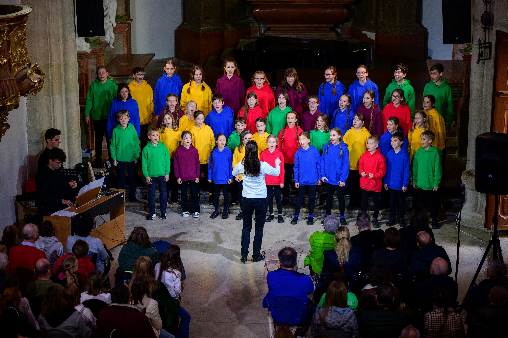
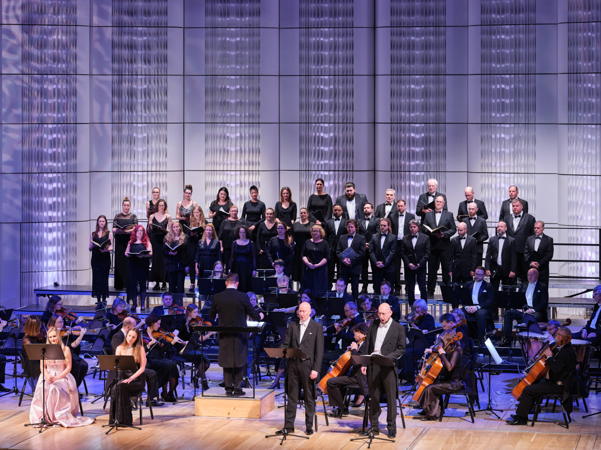

O našem sboru
Ars Brunensis je smíšený pěvecký sbor působící přes čtyřicet let. Proslul zejména interpretací barokní hudby, ale věnuje se i jazzu, folkloru, muzikálů či alternativě. Koncertuje doma i v zahraničí, účastní se festivalů, spolupracuje s významnými umělci a institucemi, má na kontě přes dvacet CD a řadu rozhlasových i televizních záznamů. Od roku 1997 úzce spolupracuje s Vladimírem Franzem, jehož scénickou hudbu opakovaně uvádí a nahrává. Sbor vystřídal několik sbormistrů; od roku 2025 ho vede Eduard Kostelník. Kromě koncertů pořádá i originálně dramaturgicky pojaté kulturní akce a podporuje mladé umělce.


Ars Brunensis je smíšený pěvecký sbor působící přes čtyřicet let. Proslul zejména interpretací barokní hudby, ale věnuje se i jazzu, folkloru, muzikálů či alternativě. Koncertuje doma i v zahraničí, účastní se festivalů, spolupracuje s významnými umělci a institucemi, má na kontě přes dvacet CD a řadu rozhlasových i televizních záznamů. Od roku 1997 úzce spolupracuje s Vladimírem Franzem…